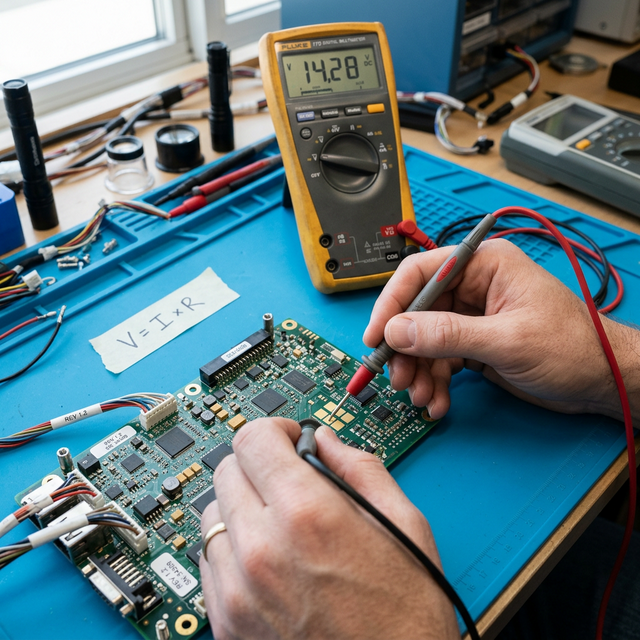

Ohm’s Law basics
Module Objectives
- Define the relationship between voltage, current, and resistance.
- Calculate an unknown electrical quantity using the three variations of Ohm's Law.
- Predict circuit behavior when voltage or resistance is proportionally changed.
Why Does This Matter?

A technician measures 14 volts across a Nav radio power connector and 7 amps through its supply wire. Is that normal? The only way to answer is Ohm's Law — the single most important mathematical relationship you will ever use in avionics troubleshooting. Every voltage reading, every current measurement, and every "is this right?" diagnostic question on the bench or in the aircraft starts and ends with V = I × R.
What You Need To Know
Ohm's Law defines the absolute physical relationship between three fundamental electrical quantities: voltage (V), current (I), and resistance (R). It has three algebraic forms, each solving for one unknown:
The Three Forms
- 1. I = V / R — Current equals voltage divided by resistance.
- *Use case:* You know the supply voltage and the load resistance, and you need to find out how many amps the circuit will draw to size a wire/breaker.
- 2. V = I × R — Voltage equals current multiplied by resistance.
- *Use case:* You are measuring 2 amps of current flowing through a corroded ground terminal that has 3 ohms of resistance. 2A × 3Ω = a 6-volt drop across that bad connection.
- 3. R = V / I — Resistance equals voltage divided by current.
- *Use case:* You measure 28V across a landing light and measure 10 amps flowing through it. The resistance of the bulb must be 2.8 ohms.
Proportionality Rules (The Intuitive Check)
You should understand how the three quantities relate when one is held constant, without having to calculate the math every time:
- Voltage increases, resistance constant → Current increases proportionally. Doubling voltage doubles current. *(Direct proportionality)*
- Resistance increases, voltage constant → Current decreases proportionally. Doubling resistance halves current. *(Inverse proportionality)*
- Current increases, resistance constant → Voltage drop across the resistor increases proportionally. Doubling current doubles voltage drop. *(Direct proportionality)*
These proportionality rules are how you instantly predict what happens in a circuit when conditions change during troubleshooting.
System Visualization
graph TD
A[Ohm's Law Triangle] --> B[V / I * R]
C[Need Voltage?] --> D[Cover V: I x R]
E[Need Current?] --> F[Cover I: V / R]
G[Need Resistance?] --> H[Cover R: V / I]
style B fill:#1e40af,stroke:#1e3a8a,stroke-width:2px,color:#fff
On The Job
When you measure a voltage and a current on the bench, divide the voltage by the current and you instantly know the resistance. When a wire shows higher-than-expected resistance (corroded connector, damaged splice), Ohm's Law tells you exactly how much voltage is being lost and how much current is being reduced. This is the foundation of every troubleshooting technique you will employ.
Reference Terms
Ohm's Law (current form)
Current (I) equals voltage (V) divided by resistance (R): I = V / R. This fundamental law relates the three primary quantities in any DC circuit.
Ohm's Law (voltage form)
Voltage equals current multiplied by resistance: V = I x R. This form is used when current and resistance are known and voltage is the unknown quantity.
Current calculation (24V / 12Ω)
Applying I = V / R: with 24 volts and 12 ohms of resistance, the circuit current is 2 amperes. This is a direct application of Ohm's Law.
Current calculation (12V / 6Ω)
I = V / R = 12V / 6Ω = 2 amps. This straightforward application of Ohm's Law confirms that a 12-volt supply drives 2 amperes through 6 ohms of total circuit resistance.
Resistance calculation (14V / 7A)
Using R = V / I: with 14 volts across a component and 7 amperes through it, the resistance is 2 ohms. This form of Ohm's Law identifies unknown resistance from measured quantities.
Current-voltage proportionality
When resistance is held constant, current is directly proportional to voltage. If voltage doubles, current doubles: I = V / R means I scales linearly with V.
Current-resistance inverse proportionality
When voltage is constant, current is inversely proportional to resistance (I = V / R). Doubling resistance halves current; halving resistance doubles current.
Voltage-current proportionality
When resistance is constant, voltage is directly proportional to current (V = I x R). Doubling the current through a fixed resistance doubles the voltage across it.
Voltage (V)
Electrical "pressure" or electromotive force that pushes current through a circuit. Measured in volts.
Current (I)
The actual flow rate of electrons through a conductor. Measured in amperes (amps).
Resistance (R)
The physical opposition to current flow. Measured in ohms (Ω).
Ohm's Law
The fundamental relationship: V = I × R.
Assessment Check
I = V / R, V = I × R, R = V / I — memorize all three forms and intuitively understand that doubling voltage doubles current, while doubling resistance halves current. --- ---